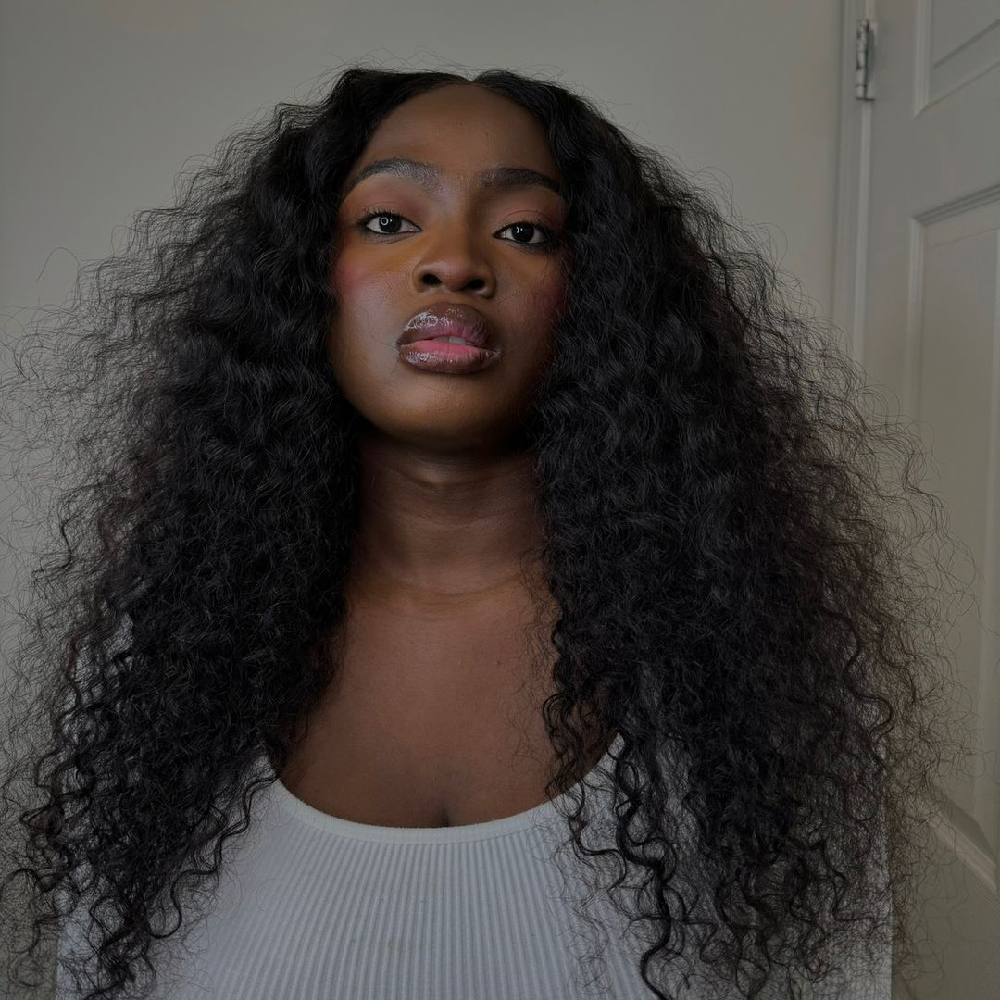
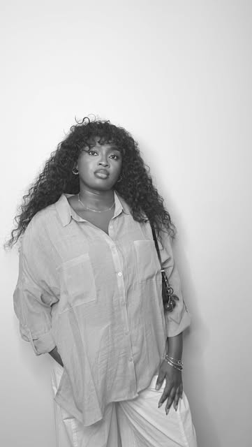
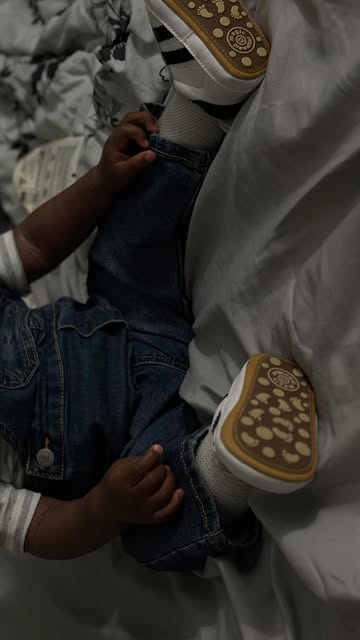

Real life.
Beautiful
stories.
A beauty ritual. A new chapter of motherhood. Something good on the stove.
I’m Covey. Welcome to the stories in between.
With love, Covey ♡

a little beauty,
a lot of soul.♡
MY LITTLE WORLDcocoCOME AS YOU ARE ↗UNFILTERED MOMENTS. A FULLER LIFE.a lot of soul.♡

A softer life.A little more joy.A LITTLE INTRODUCTION / 01
Meet the girl
behind the story.
Hi, I’m Covey. I create beauty, motherhood, and lifestyle content that brings real life into the frame. A quiet moment of self-care, a meal made with love, the beautiful chaos of being a mum — that’s where my stories begin.
My style is polished but relatable. I blend honest everyday moments with intentional storytelling to make content that feels natural, personal, and worth staying for. This is my little world. Come make yourself at home.
Let’s get to know each other ↗Life gives me
the stories.
Three sides of me. One thing in common: there’s a real person behind every frame.

01 Beauty
The rituals that bring me back to myself. Skincare, makeup, hair, and personal care — with honest conversations along the way.
Explore the stories ↗

02 Motherhood
Learning as I go. Little meals, daily routines, and the love in all the in-between moments of first-time motherhood.
Explore the stories ↗

03 Lifestyle & food
A home to make memories in. A recipe to come back to. Everyday style, good food, and little things worth celebrating.
Explore the stories ↗The everyday edit.
Good food.
Brighter days.
More of what matters.
A beautiful life is made of little things.
A few of
my favorites.
The beauty staples, little luxuries, and everyday finds worth sharing. All in one little place.
Shop my LTK ↗Browse my Amazon finds ↗THE SELF-CARE SHELF ↗Covey’slittle loves ♡
Stay a little.
Press play.
A seat in my kitchen. A moment in my day. The stories feel better when you’re here.
Films play through TikTok. You can also open each story directly on TikTok.
Your brand.
My kind of story.
From the products on my shelf to the essentials in my baby bag — collaborations that become part of the everyday.

Beauty, personal care, motherhood, hair & everyday living.
Good stories.
Meaningful connections.
Have a story in mind? I create relatable UGC and brand content across beauty, motherhood, food, and lifestyle. Let’s bring your next story to life.
Let’s tell your story ↗coveycoco@gmail.com ↗